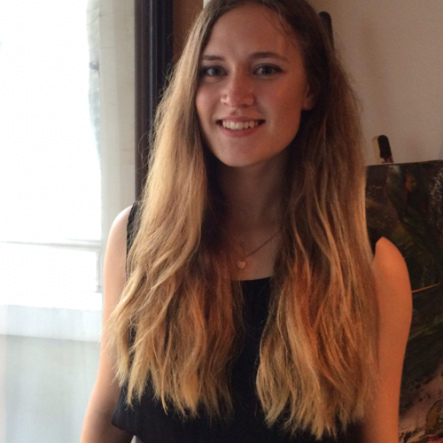

I'm a data scientist at Shopify and a proud graduate of the Recurse Center.
My work focuses on advancing artificial intelligence as a field. In particular, my interests lie in the intersection of AI, human-computer interaction and tangible user interfaces. My research goal is to augment human intelligence and creativity through extending our means of interacting with technology through the physical world.
Previously, I completed a BSc in Economics from the University of Amsterdam and a minor in Computer Science from Harvard.
Besides research and coding, I get quite excited about travelling, deep sea diving and music.

Arab Street, Singapore 2015